Points clés de l’étude :
- L’objectif de cette étude est de comparer différents grands modèles de langage embarqués sur smartphone selon leurs performances, leurs consommations d’énergie et leurs impacts environnementaux.
- L’empreinte carbone d’une tâche peut varier d’un facteur 18 selon le modèle, le framework et le backend utilisé.
- L’accélération matérielle (GPU/TPU) permet de réduire la consommation d’énergie d’un facteur de 3,8 par rapport au CPU, pour la même tâche, mais aussi de diminuer le temps de réponse jusqu’à 39%. Attention cependant à ne pas pousser au renouvellement du matériel.
- Même la façon de restituer la réponse, via l’affichage progressif de texte (streaming) a un impact mesurable : jusqu’à 12% d’écart sur la consommation énergétique finale.
- Utiliser un modèle ayant moins de paramètre peut permettre d’avoir un impact plus faible.
- La mesure est essentielle : l’impact énergétique mesuré peut-être 5 fois inférieur à des estimations génériques.
Introduction
L’intelligence artificielle transforme la manière dont nous interagissons avec nos smartphones. Reformulation, réponse automatique, correction des fautes d’orthographe, résumés… Ses compétences deviennent de plus en plus sophistiquées et sont fréquemment sollicitées, voire actives en continu. Une part croissante de ces calculs opère désormais directement sur nos appareils, sans envoyer nos données vers des serveurs distants. C’est ce qu’on appelle l’IA « on-device », locale ou embarquée.
Derrière la promesse d’une meilleur réactivité ou du respect de la vie privée se cachent d’importantes questions environnementales. Comme nous l’avions abordé dans un précédent article, faire tourner ces modèles d’IA directement sur le smartphone engendre une sollicitation énergétique accrue. Cette consommation supplémentaire lors de l’utilisation contribue à l’empreinte carbone du numérique. De plus, cette charge constante ou répétée sur les composants, notamment la batterie, accélère leur usure et réduit la durée de vie de l’appareil. Cela risque d’encourager un remplacement prématuré, aggravant ainsi l’impact écologique lié à la fabrication de nouveaux terminaux et à la gestion des déchets électroniques. Ce second article se concentre spécifiquement sur l’évaluation de l’impact environnemental de l’IA embarquée dédiée au texte sur Android.
Il est crucial de noter que l’alternative – l’exécution de ces tâches sur des serveurs distants – a également sa propre empreinte environnementale, via l’impact des centres de données.
Pour explorer cette question, nous allons analyser et comparer trois solutions techniques permettant d’utiliser des grands modèles de langage (ou LLM, Large Language Model) directement sur nos téléphones, en gardant à l’esprit leurs spécificités techniques et leurs domaines d’application potentiels :
- Llama.cpp : un projet open-source qui permet de faire tourner des grands modèles de langage, initialement ceux de Meta (Llama), sur du matériel grand public, y compris les smartphones. Il est reconnu pour son efficacité à exécuter ces modèles puissants, avec des ressources limitées.
- Android AICore : un ensemble de services système intégrés aux versions récentes d’Android. Il est conçu pour exécuter des modèles d’IA locaux, afin d’améliorer la latence et la confidentialité.
- MediaPipe : un framework open-source proposé par Google. Il fournit des outils pour l’analyse et la génération de texte adaptés à un usage mobile.
En comparant ces trois approches, nous chercherons à comprendre leurs capacités, leurs performances, mais aussi leur consommation énergétique et les implications qui en découlent pour l’utilisateur et l’environnement.
Impact de la génération de texte
Méthodologie
À l’aide de Greenspector Studio1, nous avons mesuré la durée et l’énergie consommée pour générer et afficher une réponse, ainsi qu’évalué l’impact environnemental de la réponse.
Pour chaque test, une nouvelle conversation a été initiée, puis le même prompt a été posé au modèle 5 fois de suite : Write 10 haikus. Les réponses générées seront donc toutes globalement de la même forme, et on peut estimer leur taille à environ 170 tokens.
Contexte de mesure
- Google Pixel 8, Android 15, équipé d’un TPU (Unité de Traitement Tensoriel, conçus pour des calculs de faible précision à grande échelle).
- Réseau : off
- Luminosité : 50 %
- Tests réalisés sur minimum 3 itérations pour fiabiliser les résultats
- Thème : sombre (afin de limiter la consommation d’énergie de l’écran)
Llama.cpp – Private AI
Notre première approche utilise Llama.cpp, un projet open-source populaire permettant d’exécuter une grande variété de modèles de langage (LLM) sur du matériel standard, y compris les smartphones, grâce à sa flexibilité et au support d’une large communauté. Pour ces tests, nous avons utilisé Llama.cpp en ciblant uniquement le CPU du Pixel 8.
Contexte de mesure
- Framework : Llama.cpp
- App package : us.valkon.privateai
- Modèles testés :
Performance
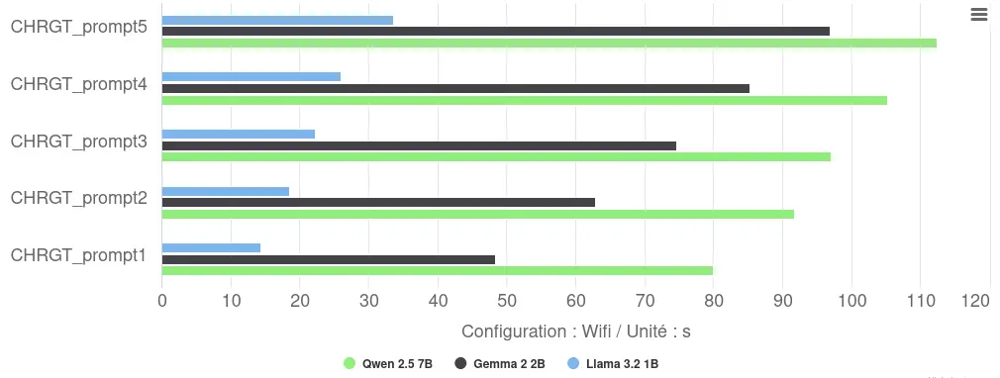
L’exécution sur CPU via Llama.cpp révèle des performances variables :
- Temps de réponse : une variabilité notable apparaît entre les répétitions (Llama : 14-34s), probablement liée aux effets de « cold start » ou d’étranglement thermique lors d’exécutions consécutives.
- Classement par performance : Llama domine avec 23s de moyenne, devançant Gemma (74s, soit +222%) et Qwen (98s, soit +326%). Cette hiérarchie suit le nombre de paramètres de chaque modèle.
- Vitesse d‘inférence : elle oscille en moyenne entre 2 tokens/s (Qwen) et 7 tokens/s (Llama).
Consommation d’énergie
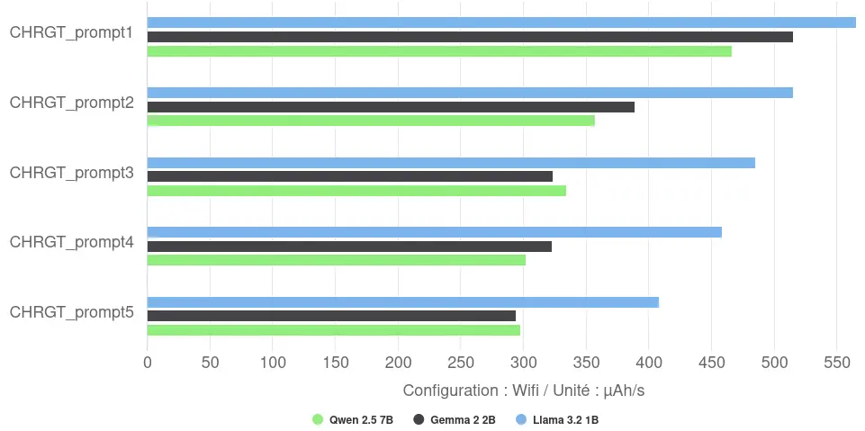
L’analyse de la vitesse de décharge révèle un fait notable : le modèle le plus rapide (Llama) affiche la vitesse de décharge la plus forte (487 µAh/s en moyenne), il parvient potentiellement à saturer plus efficacement les cœurs CPU. Inversement, les modèles plus grands et plus lents (Gemma et Qwen) présentent une vitesse de décharge moyenne plus faible (autour de 350-370 µAh/s), suggérant une utilisation différente ou moins intense des ressources CPU sur leur durée d’exécution plus longue. La vitesse de décharge diminue au fur et à mesure des itérations : la première itération est donc plus rapide mais décharge plus vite la batterie.
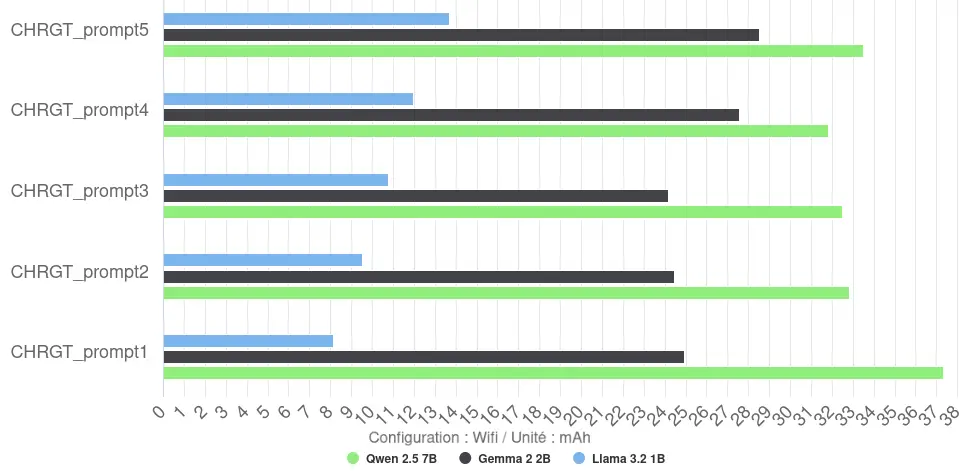
La consommation d’énergie totale par réponse (mesurée en mAh) est plus nuancée. On observe cependant des gros écarts entre les modèles, allant d’environ 11 mAh en moyenne pour Llama à 34 mAh pour Qwen.
Le rendement s’avère faible pour ces configurations CPU : Llama atteint 16 tokens/mAh, tandis que Gemma et Qwen tombent respectivement à 7 et 5 tokens/mAh.
Impact environnemental
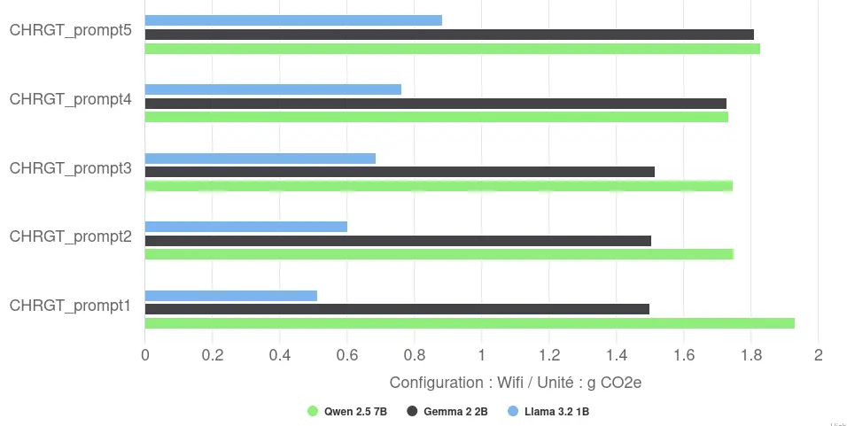
L’impact environnemental va lui aussi varier selon les réponses et les modèles. Ainsi, l’impact environnemental moyen va varier entre 0,7g CO2e pour Llama et 1,8g CO2e pour Qwen, pour la génération et l’affichage d’une réponse de 170 tokens.
Une première bonne pratique semble être de limiter le nombre de paramètres du modèle.
Conclusion
Les tests via Llama.cpp sur CPU nous permettent d’avoir une première idée de l’impact de l’exécution de LLMs sur mobile. Malgré la flexibilité de l’outil et l’utilisation de modèles quantifiés (int4/int5, nous reviendrons dessus dans la partie MediaPipe – Llm Inference), les performances restent très faibles (entre 2 et 7 tokens/s) et la consommation énergétique totale élevée (entre 11 et 34 mAh/réponse), résultant en une faible efficacité énergétique (entre 5 et 16 tokens/mAh). L’observation contre-intuitive d’une puissance instantanée plus élevée pour le modèle le plus rapide (Llama) souligne la complexité de l’optimisation CPU.
Cette faible efficacité se traduit par un impact environnemental élevé (par réponse, France, méthodologie Greenspector). L’impact varie de 0,7 gCO2eq pour le modèle le plus léger à 1,8 gCO2eq pour le plus lourd testé, soit un facteur 2,6 entre les deux extrêmes de ce groupe.
Ces résultats soulignent que si Llama.cpp offre un accès large aux modèles, s’appuyer uniquement sur le CPU, même avec des modèles quantifiés, reste une approche lente et énergivore pour ce type de tâche.
Android AICore – Gemini nano
Gemini Nano est un modèle propriétaire de Google exécuté via Android AICore. AICore est un ensemble de services système intégrés à Android, facilitant l’exécution optimisée et sécurisée de modèles d’IA « on-device », notamment via le framework Google AI Edge et en exploitant les accélérateurs matériels comme le TPU des Pixel.
Gemini Nano est un modèle multimodal et multilingue, spécifiquement conçu par Google pour le traitement local. Il existe en deux variantes :
- Nano-1 : 1.8 milliard de paramètres, quantification int4
- Nano-2 : 3.25 milliards de paramètres, quantification int4
Le SDK utilisé ne spécifie pas explicitement quelle variante (Nano-1 ou Nano-2) est téléchargée et exécutée par AICore. Cependant, au vu de la taille du modèle téléchargé sur notre appareil de test nous pouvons penser qu’il s’agit de la variante Nano-1 (1.8B paramètres).
Contexte de mesure
- Framework : Google AI Edge
- App package : com.google.ai.edge.aicore.demo
- Modèle testé : Gemini Nano-1 (Google), 1.8 milliard de paramètres, quantification int4
- Configurations testées :
- Implémentation en Kotlin, Streaming désactivé.
- Implémentation en Kotlin, Streaming activé.
- Implémentation en Java, Streaming désactivé.
- Implémentation en Java, Streaming activé.
Le « Streaming » correspond ici à l’affichage progressif du texte généré (token par token), offrant une réponse perçue comme plus dynamique, par opposition à l’affichage en bloc une fois la génération complète terminée (Streaming désactivé).
Performance
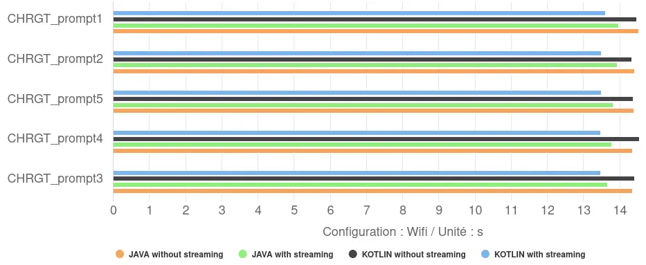
- Impact Kotlin vs Java : nos tests n’ont montré qu’une différence minimale entre l’implémentation Kotlin et Java dans l’application de démonstration. Kotlin s’est avéré très légèrement plus rapide (d’environ 2%) uniquement lorsque l’affichage progressif (streaming) était activé.
- Niveau de Performance : les temps de réponse moyens se situent dans une fourchette étroite, entre 13,5 et 14,4 secondes. Ils présentent une vitesse de génération d’environ 12 tokens/s, soit une vitesse d’inférence entre 70% et 600% supérieure à celle de nos modèles avec Llama.cpp.
- Impact du Streaming : l’activation du streaming a eu un effet positif constant sur le temps de réponse total mesuré, le réduisant de 4% à 6%. Plutôt qu’une accélération de la génération elle-même, cela suggère une meilleure gestion du flux de travail : l’application peut commencer à afficher le début de la réponse pendant que la génération se poursuit, réduisant ainsi le délai global perçu entre la requête et la fin de l’affichage.
Consommation d’énergie
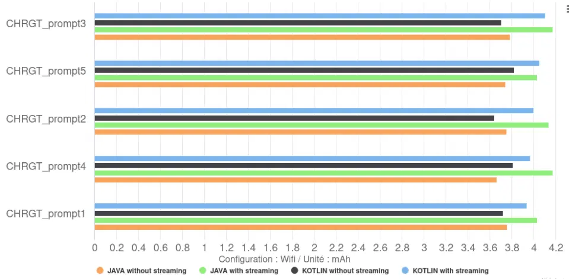
- Impact Kotlin vs Java : le choix entre Kotlin et Java a eu un impact négligeable sur la décharge totale ou la vitesse de décharge de la batterie.
- Impact du Streaming : les configurations sans streaming provoquent une décharge totale légèrement inférieure à celles avec streaming. Ceci leur permet d’avoir un meilleur rendement, 46 tokens/mAh contre 41 tokens/mAh pour les modèles avec, soit plus 12%. Il sont nettement supérieur à ceux via Llama.cpp, qui était au maximum à 16 tokens/mAh.
Une seconde bonne pratique semble être de ne pas utiliser l’affichage progressif, ce qui permet d’augmenter le rendement (tokens/mAh) de 12%.
- Cette différence est directement liée à la vitesse de décharge de la batterie : elle est plus faible sans streaming (259 µAh/s) qu’avec streaming (296 µAh/s), soit une augmentation de 14%. Cette augmentation de la vitesse de décharge en mode streaming est corrélée, à une utilisation accrue du CPU par l’application elle-même (4-6% d’utilisation CPU avec streaming contre seulement 0.5% sans streaming). En effet, l’affichage progressif demande au CPU de traiter et d’afficher les « tokens » au fur et à mesure de leur arrivée du modèle, alors qu’en mode non-streaming, le CPU reste majoritairement inactif pendant la génération. C’est ce que l’on peut observer sur les graphique ci-dessous.
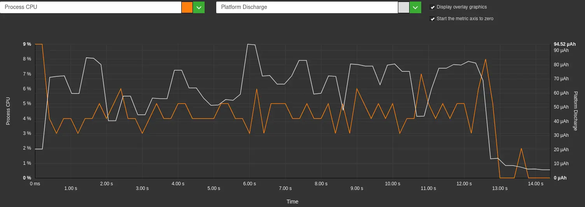
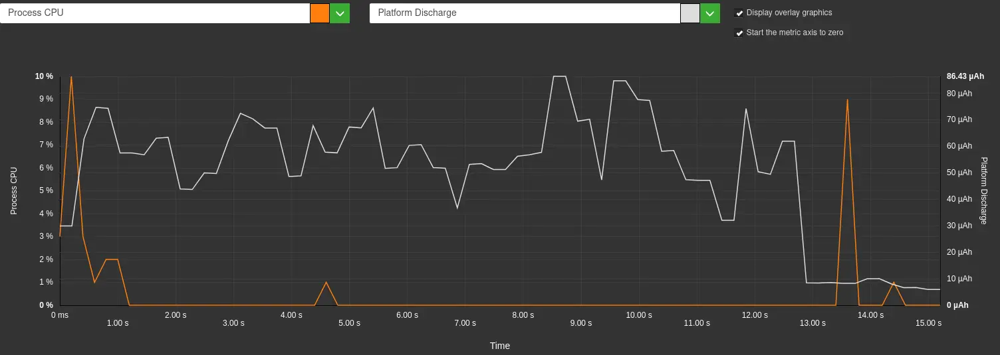
Impact environnemental
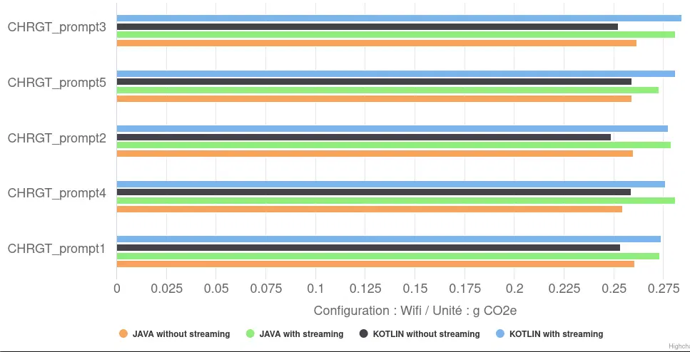
En termes d’impact environnemental, les configurations sans streaming sont logiquement les plus sobre, avec 0,26 gCO2eq en moyenne, soit environ 8% de moins que celle avec streaming (0,23 gCO2eq en moyenne). Bien que cet impact absolu par réponse soit nettement plus faible que celui des configurations Llama.cpp (jusqu’à 1,8 gCO2eq), il reste sensible à ces choix d’implémentation applicative.
Conclusion
L’analyse de Gemini Nano via Android AICore révèle une exécution stable et optimisée pour le matériel dédié (TPU) du Pixel 8 et met en lumière des compromis importants :
- L’affichage en streaming, bien qu’améliorant la réactivité perçue, augmente la consommation énergétique et la sollicitation matérielle. Ceci est principalement dû à la charge CPU supplémentaire induite sur l’application pour gérer l’affichage progressif.
- Le choix du langage d’implémentation (Kotlin ou Java) a eu un impact négligeable sur la performance et l’énergie dans ce contexte.
Du point de vue de l’impact environnemental, il est plus faible qu’avec les intégrations avec Llama.cpp, mais la forte intégration avec le matériel spécialisé (NPU/TPU), bien que renforcant l’efficacité énergétique, peut accentuer la pression au renouvellement des appareils pour accéder aux fonctionnalités d’IA les plus récentes, un facteur clé de l’impact environnemental du numérique.
MediaPipe – Llm Inference
Nous finissons notre analyse avec MediaPipe, le framework open-source de Google. Bien que connu pour ses solutions de traitement multimédia, MediaPipe propose également une API LlmInference spécifiquement conçue et optimisée pour exécuter des modèles de langage directement sur les appareils mobiles, la rendant particulièrement pertinente pour cette étude. Pour nos tests, nous avons utilisé l’application d’exemple fournie par Google.
Contexte de mesure
- Framework : MediaPipe
- App package : com.google.mediapipe.examples.llminference
- Modèles utilisés :
- Gemma 1.1 (Google) : 2 milliards de paramètres, quantification int4 et int8, backend CPU ou GPU.
- Gemma 3 (Google) : 1 milliard de paramètres, quantification int4, backend CPU ou GPU.
- DeepSeek-R1-Distill-Qwen (Deepseek) : 1.5 milliard de paramètres, quantification int8, backend CPU.
- Phi-4-mini-instruct (Microsoft) : 3.8 milliards de paramètres, quantification int8, backend CPU.
La quantification est une technique pour « compresser » les modèles et les rendre plus rapide. Int8 correspond à une compression légère et int4 à une compression plus forte.
Le choix du backend détermine l’unité principale de calcul :
- CPU : utilise les cœurs principaux du processeur (Central Processing Unit) du smartphone.
- GPU : sollicite le processeur graphique (Graphics Processing Unit), qui, sur le Google Pixel 8, peut déléguer une partie ou la totalité des calculs au NPU/TPU (Neural/Tensor Processing Unit) pour une meilleure efficacité sur les tâches d’IA.
Voyons maintenant comment ces différentes configurations (modèles, quantification, backend) se comportent en termes de durée, de consommation d’énergie et d’impact environnemental lors de l’exécution de notre tâche de génération de haïkus.
Performance
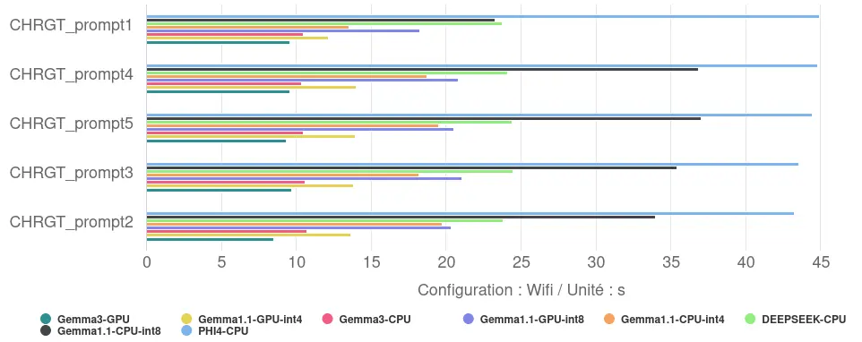
Les mesures révèlent des écarts de performance significatifs entre les configurations :
- Temps de réponse : le temps nécessaire pour générer les 10 haïkus varie de 9,3 secondes pour la configuration la plus rapide (Gemma 3, 1B, sur GPU) à 44,2 secondes pour la plus lente (Phi-4-mini, 3.8B, sur CPU). Le temps de réponse maximal est ainsi près de cinq fois supérieur au temps minimal observé.
- Vitesse de génération : cela correspond à une vitesse allant d’environ 18 tokens/s pour la configuration la plus rapide à 4 tokens/s pour la moins performante.
- L’impact de l’utilisation du GPU : le recours au GPU améliore les performances. Pour Gemma 1.1 (2B), la transition du CPU au GPU réduit le temps de réponse de 39% (en int8) et 25% (en int4). Pour Gemma 3 (1B), cette réduction est de 11%.
- L’impact de la quantification : la compression des modèles via la quantification s’avère également efficace. Pour Gemma 1.1 (2B), l’utilisation de la quantification int4 (plus agressive) par rapport à int8 accélère le modèle de 46% sur CPU et de 33% sur GPU.
- L’effet combiné des optimisations : en combinant l’utilisation du GPU et la quantification int4, le temps de réponse de Gemma 1.1 est réduit de près de 60% par rapport à la configuration int8 sur CPU (passant de 33.3s à 13.5s). Cela souligne l’intérêt d’appliquer conjointement ces techniques d’optimisation.
- Relation Taille / Optimisation : les résultats indiquent que la taille brute du modèle n’est pas le seul facteur déterminant la performance. Le modèle le plus petit (Gemma 3, 1B) obtient le meilleur temps lorsqu’il est optimisé pour le GPU. Cependant, un modèle plus grand (Gemma 1.1, 2B) avec des optimisations poussées (int4/GPU) surpasse une configuration moins optimisée d’un modèle plus petit (ici, Gemma 3 int4/CPU, bien que l’écart soit faible). Le modèle le plus volumineux testé (Phi-4-mini, 3.8B), évalué ici sans optimisation GPU ou int4, présente les temps de réponse les plus longs.
Consommation d’énergie
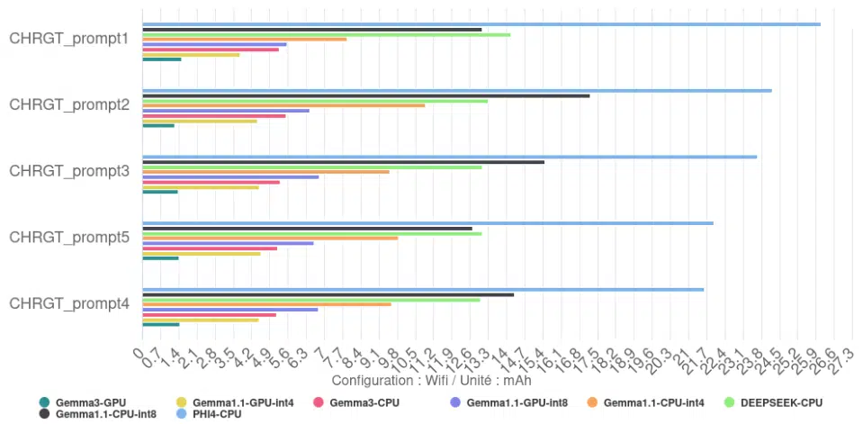
Sans surprise, l’énergie totale consommée pour générer les 10 haïkus est directement liée au temps d’exécution. Les configurations les plus lentes, comme Phi-4, sont celles qui consomment le plus d’énergie au total pour accomplir la tâche. Inversement, la configuration la plus rapide, Gemma 3 GPU, est aussi celle qui consomme le moins d’énergie au total pour cette même tâche.
On observe un rendement de 123 tokens/mAh pour Gemma 3 avec comme backend GPU contre seulement 7,5 tokens/mAh pour Phi-4-mini avec comme backend CPU.
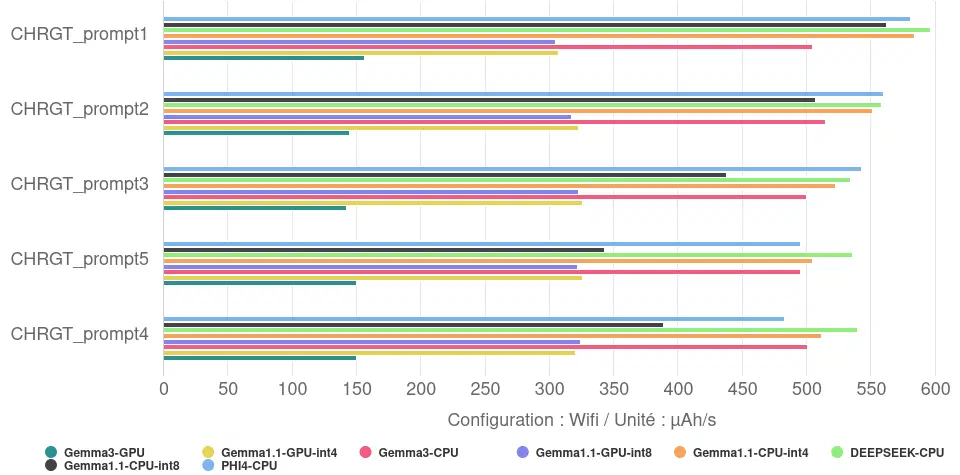
L’analyse de la vitesse de décharge révèle des informations plus nuancées sur la sollicitation du matériel :
- Très forte sollicitation : plusieurs configurations CPU affichent une décharge de batterie élevée pendant l’exécution (plus de 500 µAh/s en moyenne), indiquant une charge intense sur le processeur : c’est le cas de DEEPSEEK sur CPU, Gemma 1.1 CPU int4, PHI4-CPU ou encore Gemma 3 CPU
- Sollicitation forte : les versions GPU de Gemma 1.1 (int4 et int8) ainsi que la version CPU int8 de Gemma 1.1 se situent à un niveau intermédiaire (320 µAh/s pour les GPU, 448 µAh/s pour le CPU int8), qui correspond tout de même à plus ou moins dix fois notre consommation de référence (téléphone écran allumé, sur le fond d’écran).
- Sollicitation moyenne : Gemma 3 GPU se distingue par une vitesse de décharge de la batterie plus faible que les autres (149 µAh/s en moyenne), soit 3 à 4 fois inférieure aux plus gourmands. Cette consommation correspond tout de même à plus de 4 fois notre référence.
- Impact du Backend (CPU vs GPU) : nos mesures montrent clairement que, pour un modèle donné (Gemma 1.1 et Gemma 3), l’utilisation du GPU a systématiquement résulté en une vitesse de décharge de la batterie (µAh/s) plus faible que celle du CPU. Le GPU est donc non seulement plus rapide mais aussi moins gourmand. Cette réduction varie de moins 29% pour Gemma 1.1 int 8 à plus de 70% pour Gemma 3.
- Impact de la quantification (int4 vs int8) : l’effet de la quantification sur la puissance instantanée est contrasté :
- Sur CPU (Gemma 1.1) : la version int4 a une vitesse de décharge de la batterie plus élevée que la version int8.
- Sur GPU (Gemma 1.1) : il n’y a pas de différence notable entre int4 et int8.
- Le gain de vitesse apporté par la quantification int4 sur CPU se fait donc au prix d’une sollicitation instantanée plus forte du processeur.
Impact environnemental
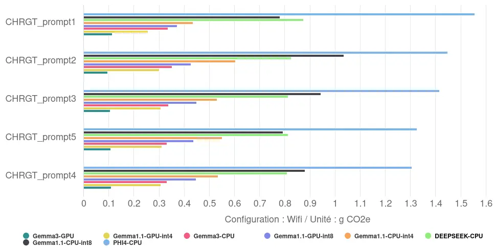
Traduit en impact environnemental, la génération et l’affichage de réponse en France, révèle un écart considérable : de 0,11 gCO2eq en moyenne pour la configuration la plus sobre (Gemma 3/GPU) à 1,41 gCO2eq en moyenne pour la moins efficiente (Phi-4-mini/CPU). Ce facteur 13 souligne l’importance d’optimiser de manière coordonnée le logiciel et le matériel.
Conclusion
Ces tests sur MediaPipe confirment que les choix techniques (modèle, backend CPU/GPU, quantification) dictent performance et consommation énergétique. Une configuration peu optimisée dégrade l’expérience utilisateur et l’autonomie, contrairement aux solutions efficientes, soulignant l’enjeu central de l’IA embarquée.
Une troisième bonne pratique semble être de privilégier l’utilisation d’un accélérateur matériel (NPU/TPU ou à défaut le GPU) au CPU : cela permet au modèle de faire la même tâche entre 11% et 39% plus rapidement, tout en consommant entre 2,2 et 3,8 fois moins d’énergie.2
Conclusion
Notre comparaison des trois approches révèle une hiérarchie claire en termes de performance, d’efficacité énergétique et d’impact environnemental pour l’IA textuelle locale (basée ici sur une génération et l’affichage d’un texte de 170 tokens).
Performance
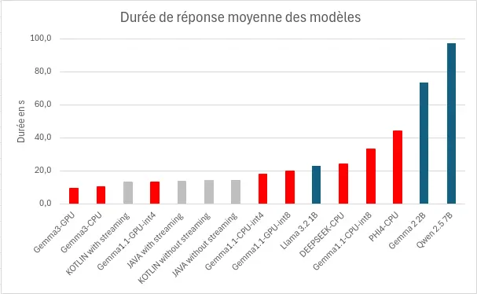
Pour générer et afficher la réponse, nos modèles ont mis en moyenne 28,2s, avec un minimum à 9,3s et un maximum à 97,3s, soit une vitesse de génération comprise en 2 et 18 tokens/s. Les facteurs les plus déterminants semblent être :
- Le nombre de paramètre : plus il sera faible, plus le modèle sera performant. (llama.cpp)
- L’utilisation d’un accélérateur matériel : l’utilisation d’un GPU, TPU ou NPU permet d’améliorer significativement les performances. (MediaPipe)
- La quantification : l’utilisation d’une quantification plus aggresive semble améliorer les performances. (MediaPipe)
Ces performances restent assez faibles si on les compare à des itérations sur serveur, où la vitesse d’inférence peut atteindre les 90 tokens/s.3
Consommation d’énergie
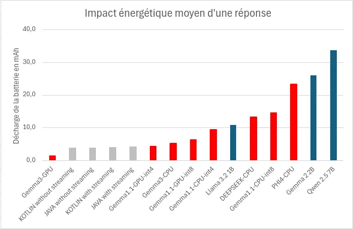
Pour générer et afficher la réponse, nos modèles ont consommés en moyenne 11mAh, avec un minimum à 1,4mAh et un maximum à 33,6mAh. Les facteurs les plus déterminants semblent être :
- La durée de réponse : plus elle sera longue, plus le modèle sera consommateur.
- L‘utilisation d’un accélérateur matériel : l’utilisation d’un GPU, TPU ou NPU permet de réduire significativement la décharge de la batterie. (MediaPipe)
- L’utilisation du streaming : l’utilisation de l’affichage progressif va proquer une surconsommation d’énergie. (AndroidAICore)
Nos résultats montrent aussi combien la configuration spécifique est déterminante : notre mesure pour Gemma 2 2B (int5/CPU/Llama.cpp) à 0,11 Wh/réponse (avec une tension nominale de sortie de la batterie à 3,89Volts4) s’est avérée environ 5 fois plus économe que des chiffres issus de l’outil Ecologits Calculator sur Hugging Face5 pour le même modèle dans un contexte différent : 0,51 Wh pour 170 tokens, soulignant l’importance du contexte d’exécution, ainsi que l’importance de la mesure.
Impact environnemental
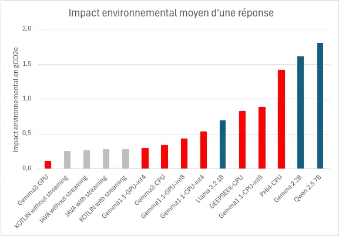
Pour générer et afficher la réponse, l’impact environnemental est moyen évalué est de 0,7gCO2e, avec un minimum à 0,1gCO2e et un maximum à 1,8gCO2e, soit un écart d’un facteur 18.
Ici aussi, la configuration spécifique est déterminante : notre évaluation pour Gemma 2 2B (int5/CPU/Llama.cpp) à 1,6 gCO2e/réponse s’est avérée environ 5 fois plus grande que des chiffres issus de l’outil Ecologits Calculator sur Hugging Face pour le même modèle dans un contexte différent : 0,316 gCO2e pour 170 tokens, soulignant ici aussi l’importance du contexte d’exécution.
Si les puces dédiées à l’IA (NPU/TPU), de plus en plus courantes, favorisent l’efficacité et donc l’impact environnemental des réponses, la demande croissante pour ces capacités risque aussi d’accélérer le renouvellement des appareils, alourdissant l’empreinte environnementale globale du numérique.
Sources
- https://saas.greenspector.com/ ↩︎
- Il est important que cette bonne pratique n’incite pas les utilisateurs à changer leur matériel pour l’utiliser, car le gain environnemental qu’elle procure est négligeable comparé à celui de conserver leur équipement le plus longtemps possible. ↩︎
- https://www.inferless.com/learn/exploring-llms-speed-benchmarks-independent-analysis ↩︎
- https://www.ifixit.com/fr-fr/products/google-pixel-8-battery-genuine ↩︎
- https://huggingface.co/spaces/genai-impact/ecologits-calculator ↩︎